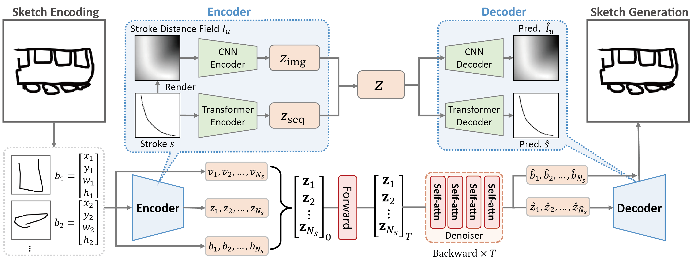
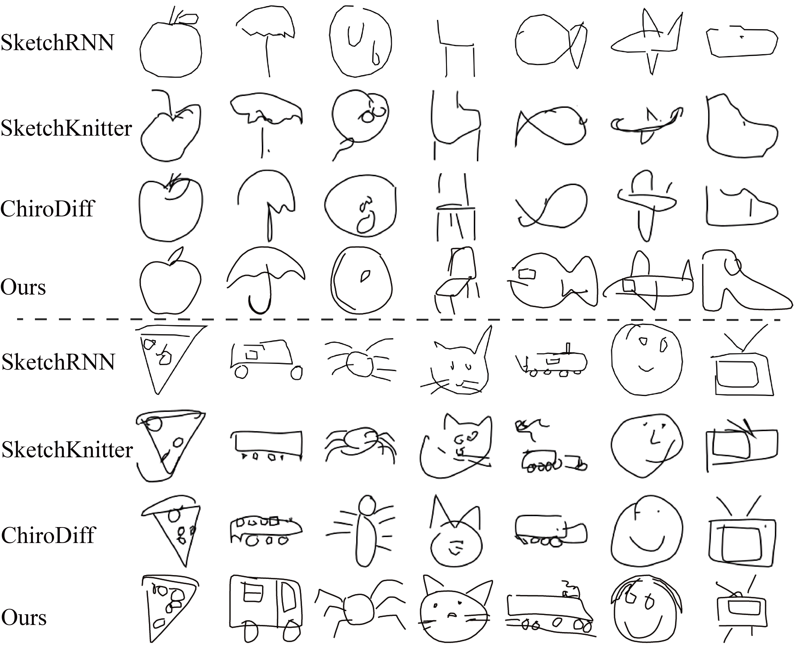
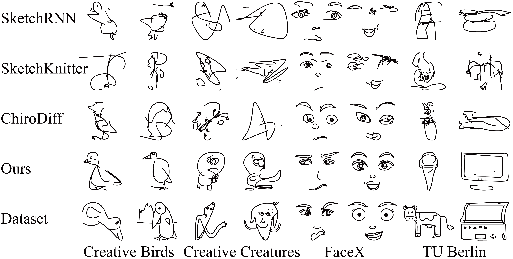

In the field of sketch generation, raster-format-trained models often produce non-stroke artifacts, while vector-format-trained models typically lack a holistic understanding of sketches, resulting in compromised recognizability. Moreover, existing methods struggle to extract common features from similar elements (e.g., animal eyes) that appear at varying positions across sketches. To address these challenges, we propose StrokeFusion, a two-stage framework for vector sketch generation. It contains a dual-modal sketch feature learning network that maps strokes into a high-quality latent space. This network decomposes sketches into normalized strokes and jointly encodes stroke sequences with Unsigned Distance Function (UDF) maps, representing sketches as sets of stroke feature vectors. Building upon this representation, our framework exploits a stroke-level latent diffusion model that simultaneously adjusts stroke position, scale, and trajectory during generation. This enables high-fidelity stroke generation while supporting stroke interpolation editing. Extensive experiments across multiple sketch datasets demonstrate that our framework outperforms state-of-the-art techniques, validating its effectiveness in preserving structural integrity and semantic features.



| Method | < 4 strokes | < 8 strokes | $\geq$ 8 strokes | ||||||
|---|---|---|---|---|---|---|---|---|---|
| FID$\downarrow$ | Prec$\uparrow$ | Rec$\uparrow$ | FID$\downarrow$ | Prec$\uparrow$ | Rec$\uparrow$ | FID$\downarrow$ | Prec$\uparrow$ | Rec$\uparrow$ | |
| SketchRNN | 31.61 | 0.49 | 0.45 | 36.98 | 0.58 | 0.44 | 40.67 | 0.55 | 0.40 |
| SketchKnitter | 23.17 | 0.52 | 0.48 | 27.07 | 0.57 | 0.45 | 35.64 | 0.54 | 0.40 |
| ChiroDiff | 17.17 | 0.61 | 0.50 | 23.84 | 0.63 | 0.45 | 27.78 | 0.62 | 0.42 |
| StrokeFusion | 19.53 | 0.71 | 0.58 | 18.99 | 0.69 | 0.61 | 17.76 | 0.71 | 0.58 |
Table 1: Performance comparison across different stroke-count categories in QuickDraw. Classes are grouped by average stroke counts: low-stroke (< 4), medium-stroke (< 8), and high-stroke ($\geq$ 8). Bold and underlined values indicate the best and second-best performances, respectively.
| Method | Creative Birds | Creative Creatures | FaceX | TU Berlin | ||||||||
|---|---|---|---|---|---|---|---|---|---|---|---|---|
| FID$\downarrow$ | Prec$\uparrow$ | Rec$\uparrow$ | FID$\downarrow$ | Prec$\uparrow$ | Rec$\uparrow$ | FID$\downarrow$ | Prec$\uparrow$ | Rec$\uparrow$ | FID$\downarrow$ | Prec$\uparrow$ | Rec$\uparrow$ | |
| SketchRNN | 59.85 | 0.26 | 0.28 | 121.02 | 0.44 | 0.26 | 155.02 | 0.01 | 0.31 | 98.01 | 0.73 | 0.20 |
| SketchKnitter | 59.16 | 0.25 | 0.22 | 110.46 | 0.42 | 0.27 | 156.97 | 0.08 | 0.34 | 99.46 | 0.56 | 0.22 |
| ChiroDiff | 60.10 | 0.56 | 0.18 | 36.66 | 0.59 | 0.27 | 99.33 | 0.06 | 0.30 | 98.30 | 0.53 | 0.25 |
| Doodleformer | 27.32 | 0.67 | 0.55 | 33.46 | 0.52 | 0.69 | - | - | - | - | - | - |
| StrokeFusion | 26.19 | 0.56 | 0.30 | 19.41 | 0.58 | 0.32 | 7.27 | 0.76 | 0.89 | 33.68 | 0.66 | 0.48 |
Table 2: Performance comparison on additional datasets. Our method achieves consistently better FID, Precision, and Recall across all datasets. Bold and underlined values indicate the best and second-best performances, respectively.
@inproceedings{zhou2026strokefusion,
title={StrokeFusion: Vector Sketch Generation via Joint Stroke-UDF Encoding and Latent Sequence Diffusion},
author={Zhou, Jin and Zhou, Yi and Yang, Hongliang and Xu, Pengfei and Huang, Hui},
booktitle={Proceedings of the AAAI Conference on Artificial Intelligence},
year={2026}
}